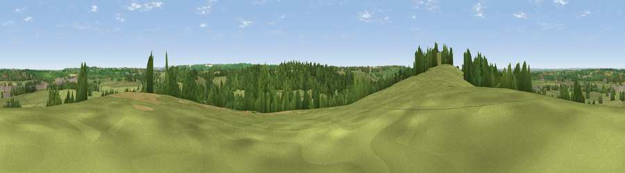

Viewpoint near Tockenham
#32416 in England · top 57% of its area beats it · near TockenhamThe view, rendered

A 360° render of this exact spot computed from the terrain model, tree cover and land cover — summer colours, afternoon light, calibrated against photographs of famous viewpoints. Real trees, hedges and buildings will differ in detail.
The panorama
Grey silhouette: terrain skyline in each direction (720 bearings, Earth curvature and refraction included). Dashed green: skyline with trees (+15 m) and buildings (+8 m) as obstacles. Blue strip: how far the ground is visible on each bearing.
Where the view opens
Wedge length = distance to the farthest visible ground on that bearing (vegetation-aware). Rings at 10, 25 and 50 km.
What fills the view
70% grassland · 19% woodland · 8% cropland · 2% built-up
Angular shares of the visible panorama (visual magnitude), not map area. Landscape diversity 0.38 (0–1 Shannon).
Key numbers
More beautiful places nearby
The staircase of upgrades: each row has a higher view potential than everything closer. Driving times are estimates from straight-line distance, calibrated against real road routing — check an actual route before setting out.
| Place | Direction | Drive | Score |
|---|---|---|---|
| Viewpoint near Tockenham | WSW · 0 km | ~1 min | 53.9 |
| Viewpoint near Bradenstoke | SW · 5 km | ~12 min | 56.4 |
| Viewpoint near Foxham | SW · 6 km | ~12 min | 60.5 |
| Viewpoint near Clyffe Pypard | SSE · 7 km | ~14 min | 63.7 |
| Viewpoint near Clyffe Pypard | SE · 7 km | ~14 min | 64.7 |
| Viewpoint near Broad Town | ESE · 8 km | ~16 min | 66.9 |
| Viewpoint near Cherhill | S · 13 km | ~24 min | 71.2 |
| Viewpoint near Cherhill | S · 15 km | ~26 min | 73.6 |
51.53487, -1.95778 · source: screening · position refined by local search. Computed location — check access rights before visiting.